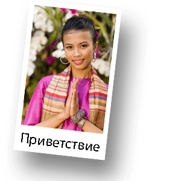

Таиланд
Королевство Таиланд является самой уникальной страной Юго-Восточной Азии. До 1939 года Таиланд имел название Сиам, что в переводе означает «свобода». Перевод раннего названия Таиланда вполне себя оправдывает. Это единственная страна Юго-Восточной Азии, сохранившая независимость, в то время как все соседние страны были колониями Франции или Великобритании.
Тайланд
Королевство Таиланд основано в 1238г.
Официальный язык - тайский
Столица - Бангкок
По тайски Бангкок - Крунг Тхеп Маха Накхон
Крупнейший город - Бангкок
Форма правления - Конституционная монархия
Король - Рама Х
Государственная религия - буддизм (Тхеравада)
Территория – 514 000 км. кв.
Население - 67 089 500 чел.
Плотность населения - 130,5 чел./км. кв.
Валюта - ฿ бат (THB)
Интернет-домен - .th
Телефонный код - +66
Часовой пояс - +7
Географическое положение.
Таиланд расположен в Юго-Восточной Азии, на полуостровах Индокитай и Малакка, с запада омывается Андаманским морем, с востока Сиамским заливом Южно-Китайского моря. Территория Таиланда вытянута с севера на юг (расстояние от самой северной точки до самой южной точки — 1860 км). Благодаря центральному положению в Юго-Восточной Азии и наибольшей среди стран региона протяжённости с севера на юг, Таиланд имеет самый разнообразный в Юго-Восточной Азии климат, поэтому Таиланд это одним из немногих в мире круглогодичных туристических курортов. Тайланд разделен на пять регионов: Центральный, Восточный, Северный, Северовосточный и Южный Таиланд.
Климат Таиланда.
Климат Таиланда — влажный тропический и субэкваториальный. Большая протяженность страны с севера на юг делает климат Таиланда одним из самых разнообразных в Юго-Восточной Азии. В Таиланде прослеживается 3 сезона и каждый сезон является временем года. Времен года в Тайланде также три. Юго-западный муссон приносит дожди и относительную прохладу с конца мая до середины сентября. К октябрю дожди прекращаются, и наступает «прохладный сухой» сезон, продолжающийся до середины февраля. После ослабления муссонов, с марта до мая, наступает сильная жара, причём влажность воздуха постепенно увеличивается вплоть до начала нового муссонного сезона, а затем цикл повторяется снова. Сезон дождей в Таиланде ярко выражен лишь на его островной части. Что касается материковой части, то отдых на материке возможен круглый год. Продолжительность сезона дождей определить очень трудно. Обычно он начинается в мае — июне и может продолжаться до сентября - ноября. Сезон дождей в Таиланде несравним с аналогичным временем года в других странах Юго-Восточной Азии. В Таиланде сезон дождей весьма щадящий.
Население Таиланда.
Население Таиланда в основном состоит из этнических тайцев (80 %) и лаосцев. Также существует большая община этнических китайцев (10 %) Другие этнические группы представлены малайцами, хмонгами, кхмерами, а также вьетнамцами, которые осели в восточном Таиланде ещё со времён Вьетнамской войны. 94,6 % жителей Таиланда исповедуют буддизм. 4,6 % являются мусульманами — в основном это малайцы, проживающие на юге страны.
Экономика Таиланда.
Сильные стороны экономики Таиланда: успехи в экспортном производстве, способные даже возместить импорт. Быстрый экономический рост. Природный газ. Таиланд - один из основных мировых экспортёров риса, фруктов и каучука. Слабые стороны экономики Таиланда: экономика концентрируется в основном вокруг Бангкока. Недостаточные запасы пресной воды. Быстрорастущий внешний долг. 60 % населения работают в мелких крестьянских хозяйствах. В энергетической отрасли - порядка 70 % электричества вырабатывается с использованием природного газа. Природный газ добывается в офшорном месторождении Платонг, расположенном на дне Сиамского залива. Также крупным поставщиком природного газа является Катар, который транспортирует сжиженный газ.
Политическое устройство Таиланда.
Форма правления — Конституционная монархия. Глава государства — Король. Он очень уважаем и почитаем гражданами. Свою власть использует во время политических кризисов. Парламент Таиланда — двухпалатная Национальная Ассамблея, состоит из Сената на 150 мест и Палаты Представителей на 480 мест. Лидер партии, имеющей большинство в Палате Представителей, как правило, становится премьер-министром. Членов обеих палат избирает народ Таиланда, за исключением 50 % Верхней палаты (Сената), они назначаются монархом. Нижняя палата (Палата представителей) избирается на 4 года, Сенат — на 6 лет. До марта 2000 года Сенат назначался исключительно Королём.
Национальные особенности и нормы поведения в Таиланде.
Тайцы доброжелательны, уравновешены, гостеприимны. Таиланд иногда называют "страной улыбок". Это состояние отражает девиз тайцев - "санук", т.е. получай радость, живи с удовольствием. С тайцами надо говорить спокойным голосом. При входе в частный дом, принято снимать обувь.

Для ведения деловых переговоров необходимы визитные карточки. Тайцы отвергают похлопывание по спине, по плечу, тем более непозволительны дружеские объятия. Нижняя часть тела считается презренной, прикосновение чужой ноги к тайцу наносит ему обиду. При встречах и расставаниях рукопожатия заменяются жестом рук со сложенными на уровне груди ладонями. Недопустимо сидеть, скрестив ноги. Традиционное приветствие в Таиланде - "вай" (это сложенные "лодочкой" ладони), а в повседневной жизни тайцы обходятся дружеским кивком и универсальным "Hello", руки друг другу пожимать не принято.Королевский дом пользуется огромным уважением жителей страны. Иностранцам рекомендуется вставать или почтительно останавливаться прямо на улице, в случае исполнения королевского гимна. Все статуи Будды считаются священными, поэтому не следует карабкаться на них для фотографирования. Загорать и купаться без купального костюма запрещено - взимается большой штраф.
Интересные факты о Таиланде.
- До 1913 года большинство тайцев не имели фамилий, только имена
- Таиланд — единственная страна в мире, где Король, покровитель всех религий, по Конституции должен быть буддистом
- Таиланд — единственная страна в Юго-Восточной Азии, которая никогда не была чьей-либо колонией
- Мыанг Боран (Древний Город) в Самут Пракане является самым большим в мире музеем под открытым небом
- В Таиланде более 32 700 буддийских храмов, в которых проживает около 370 тысяч монахов и послушников. Это, примерно, 1 монах на 170 граждан
- Вопреки распространённому среди туристов мнению, Таиланд, за пределами «туристической зоны» - страна весьма строгих семейных ценностей и буддийской религиозной морали
- Сын короля РамыV принц Чакрапонг был женат на Екатерине Десницкой, которая родила от принца сына
- Тайцы живут по буддийскому календарю, летоисчисление у них начинается не с Рождества Христова, а со дня смерти Будды в 543 году до н.э.
Среднегодовая шкала температуры в Королевстве Тайланд.
Средняя температура +27 C. Различают три сезона: жаркий (март-июнь), дождливый (июль-октябрь), "холодный" (ноябрь-февраль), но их все можно справедливо считать пляжными.
| I | II | III | IV | V | VI | VII | VIII | IX | X | XI | XII |
|---|---|---|---|---|---|---|---|---|---|---|---|
26° |
27° |
29° |
30° |
29° |
28° |
27° |
27° |
27° |
26° |
26° |
26° |